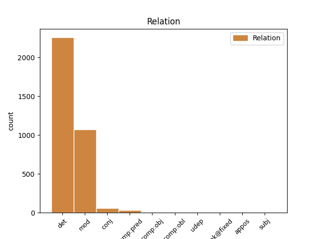
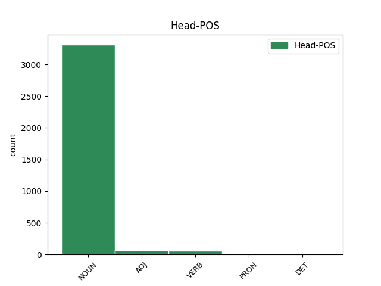
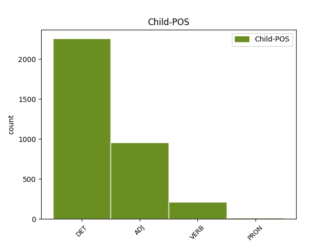

Distribution of features within this leaf



Agreement Rules sorted by frequency.
When the head token is NOUN and the dependent token is DET.
1 " _ _ _ _ 0 _ _ _
2 C' _ _ _ _ 0 _ _ _
3 est _ _ _ _ 0 _ _ _
4 une un DET RI Definite=Ind|Gender=Fem|Number=Sing|PronType=Art 6 det _ _
5 grande _ _ _ _ 0 _ _ _
6 découverte découverte NOUN S Gender=Fem|Number=Sing 0 _ _ _
7 scientifique _ _ _ _ 0 _ _ _
8 " _ _ _ _ 0 _ _ _
9 . _ _ _ _ 0 _ _ _
When the head token is NOUN and the dependent token is ADJ.
1 " _ _ _ _ 0 _ _ _
2 C' _ _ _ _ 0 _ _ _
3 est _ _ _ _ 0 _ _ _
4 une _ _ _ _ 0 _ _ _
5 grande grand ADJ A Gender=Fem|Number=Sing 6 mod _ _
6 découverte découverte NOUN S Gender=Fem|Number=Sing 0 _ _ _
7 scientifique _ _ _ _ 0 _ _ _
8 " _ _ _ _ 0 _ _ _
9 . _ _ _ _ 0 _ _ _
When the head token is NOUN and the dependent token is VERB.
1 Elle _ _ _ _ 0 _ _ _
2 contenait _ _ _ _ 0 _ _ _
3 200 _ _ _ _ 0 _ _ _
4 à _ _ _ _ 0 _ _ _
5 300 _ _ _ _ 0 _ _ _
6 à _ _ _ _ 0 _ _ _
7 400 _ _ _ _ 0 _ _ _
8 fois _ _ _ _ 0 _ _ _
9 plus _ _ _ _ 0 _ _ _
10 de _ _ _ _ 0 _ _ _
11 produits _ _ _ _ 0 _ _ _
12 toxiques _ _ _ _ 0 _ _ _
13 que _ _ _ _ 0 _ _ _
14 les _ _ _ _ 0 _ _ _
15 taux taux NOUN S Gender=Masc 0 _ _ _
16 autorisés autoriser VERB V Gender=Masc|Number=Plur|Tense=Past|VerbForm=Part 15 mod _ _
17 par _ _ _ _ 0 _ _ _
18 la _ _ _ _ 0 _ _ _
19 EPA _ _ _ _ 0 _ _ _
20 . _ _ _ _ 0 _ _ _
When the head token is ADJ and the dependent token is ADJ.
1 Le _ _ _ _ 0 _ _ _
2 taux _ _ _ _ 0 _ _ _
3 de _ _ _ _ 0 _ _ _
4 mortalité _ _ _ _ 0 _ _ _
5 chez _ _ _ _ 0 _ _ _
6 ces _ _ _ _ 0 _ _ _
7 dauphins _ _ _ _ 0 _ _ _
8 , _ _ _ _ 0 _ _ _
9 pour _ _ _ _ 0 _ _ _
10 le _ _ _ _ 0 _ _ _
11 premier premier ADJ NO Gender=Masc|Number=Sing|NumType=Ord 12 mod _ _
12 petit petit ADJ A Gender=Masc|Number=Sing 0 _ _ _
13 de _ _ _ _ 0 _ _ _
14 chaque _ _ _ _ 0 _ _ _
15 femelle _ _ _ _ 0 _ _ _
16 , _ _ _ _ 0 _ _ _
17 est _ _ _ _ 0 _ _ _
18 de _ _ _ _ 0 _ _ _
19 60 _ _ _ _ 0 _ _ _
20 à _ _ _ _ 0 _ _ _
21 80 _ _ _ _ 0 _ _ _
22 pourcent _ _ _ _ 0 _ _ _
23 . _ _ _ _ 0 _ _ _
When the head token is VERB and the dependent token is ADJ.
1 Alors _ _ _ _ 0 _ _ _
2 , _ _ _ _ 0 _ _ _
3 la _ _ _ _ 0 _ _ _
4 mère _ _ _ _ 0 _ _ _
5 peut _ _ _ _ 0 _ _ _
6 aller _ _ _ _ 0 _ _ _
7 se _ _ _ _ 0 _ _ _
8 reproduire _ _ _ _ 0 _ _ _
9 , _ _ _ _ 0 _ _ _
10 mais _ _ _ _ 0 _ _ _
11 quel _ _ _ _ 0 _ _ _
12 prix _ _ _ _ 0 _ _ _
13 terrible _ _ _ _ 0 _ _ _
14 à _ _ _ _ 0 _ _ _
15 payer _ _ _ _ 0 _ _ _
16 pour _ _ _ _ 0 _ _ _
17 l' _ _ _ _ 0 _ _ _
18 accumulation _ _ _ _ 0 _ _ _
19 de _ _ _ _ 0 _ _ _
20 ce _ _ _ _ 0 _ _ _
21 polluant _ _ _ _ 0 _ _ _
22 dans _ _ _ _ 0 _ _ _
23 ces _ _ _ _ 0 _ _ _
24 animaux _ _ _ _ 0 _ _ _
25 - _ _ _ _ 0 _ _ _
26 la _ _ _ _ 0 _ _ _
27 mort _ _ _ _ 0 _ _ _
28 de _ _ _ _ 0 _ _ _
29 leur _ _ _ _ 0 _ _ _
30 premier premier ADJ NO Gender=Masc|Number=Sing|NumType=Ord 31 mod _ _
31 né naître VERB V Gender=Masc|Number=Sing|Tense=Past|VerbForm=Part 0 _ _ _
32 . _ _ _ _ 0 _ _ _
When the head token is ADJ and the dependent token is DET.
1 Alors _ _ _ _ 0 _ _ _
2 , _ _ _ _ 0 _ _ _
3 la _ _ _ _ 0 _ _ _
4 mère _ _ _ _ 0 _ _ _
5 peut _ _ _ _ 0 _ _ _
6 aller _ _ _ _ 0 _ _ _
7 se _ _ _ _ 0 _ _ _
8 reproduire _ _ _ _ 0 _ _ _
9 , _ _ _ _ 0 _ _ _
10 mais _ _ _ _ 0 _ _ _
11 quel _ _ _ _ 0 _ _ _
12 prix _ _ _ _ 0 _ _ _
13 terrible _ _ _ _ 0 _ _ _
14 à _ _ _ _ 0 _ _ _
15 payer _ _ _ _ 0 _ _ _
16 pour _ _ _ _ 0 _ _ _
17 l' _ _ _ _ 0 _ _ _
18 accumulation _ _ _ _ 0 _ _ _
19 de _ _ _ _ 0 _ _ _
20 ce ce DET DD Gender=Masc|Number=Sing|PronType=Dem 21 det _ _
21 polluant polluant ADJ A Gender=Masc|Number=Sing 0 _ _ _
22 dans _ _ _ _ 0 _ _ _
23 ces _ _ _ _ 0 _ _ _
24 animaux _ _ _ _ 0 _ _ _
25 - _ _ _ _ 0 _ _ _
26 la _ _ _ _ 0 _ _ _
27 mort _ _ _ _ 0 _ _ _
28 de _ _ _ _ 0 _ _ _
29 leur _ _ _ _ 0 _ _ _
30 premier _ _ _ _ 0 _ _ _
31 né _ _ _ _ 0 _ _ _
32 . _ _ _ _ 0 _ _ _
When the head token is VERB and the dependent token is VERB.
1 Nul _ _ _ _ 0 _ _ _
2 ne _ _ _ _ 0 _ _ _
3 peut _ _ _ _ 0 _ _ _
4 être _ _ _ _ 0 _ _ _
5 arbitrairement _ _ _ _ 0 _ _ _
6 arrêté _ _ _ _ 0 _ _ _
7 , _ _ _ _ 0 _ _ _
8 détenu détenir VERB V Gender=Masc|Number=Sing|Tense=Past|VerbForm=Part 0 _ _ _
9 ou _ _ _ _ 0 _ _ _
10 exilé exiler VERB V Gender=Masc|Number=Sing|Tense=Past|VerbForm=Part 8 conj _ SpaceAfter=No
11 . _ _ _ _ 0 _ _ _
When the head token is NOUN and the dependent token is PRON.
1 1 _ _ _ _ 0 _ _ _
2 . _ _ _ _ 0 _ _ _
3 Toute _ _ _ _ 0 _ _ _
4 personne _ _ _ _ 0 _ _ _
5 a _ _ _ _ 0 _ _ _
6 droit _ _ _ _ 0 _ _ _
7 à _ _ _ _ 0 _ _ _
8 un _ _ _ _ 0 _ _ _
9 niveau _ _ _ _ 0 _ _ _
10 de _ _ _ _ 0 _ _ _
11 vie _ _ _ _ 0 _ _ _
12 suffisant _ _ _ _ 0 _ _ _
13 pour _ _ _ _ 0 _ _ _
14 assurer _ _ _ _ 0 _ _ _
15 sa _ _ _ _ 0 _ _ _
16 santé _ _ _ _ 0 _ _ _
17 , _ _ _ _ 0 _ _ _
18 son _ _ _ _ 0 _ _ _
19 bien-être bien-être NOUN S Gender=Masc|Number=Sing 0 _ _ _
20 et _ _ _ _ 0 _ _ _
21 ceux ceux PRON PD Gender=Masc|Number=Plur|PronType=Dem 19 conj _ _
22 de _ _ _ _ 0 _ _ _
23 sa _ _ _ _ 0 _ _ _
24 famille _ _ _ _ 0 _ _ _
25 , _ _ _ _ 0 _ _ _
26 notamment _ _ _ _ 0 _ _ _
27 pour _ _ _ _ 0 _ _ _
28 l' _ _ _ _ 0 _ _ _
29 alimentation _ _ _ _ 0 _ _ _
30 , _ _ _ _ 0 _ _ _
31 l' _ _ _ _ 0 _ _ _
32 habillement _ _ _ _ 0 _ _ _
33 , _ _ _ _ 0 _ _ _
34 le _ _ _ _ 0 _ _ _
35 logement _ _ _ _ 0 _ _ _
36 , _ _ _ _ 0 _ _ _
37 les _ _ _ _ 0 _ _ _
38 soins _ _ _ _ 0 _ _ _
39 médicaux _ _ _ _ 0 _ _ _
40 ainsi _ _ _ _ 0 _ _ _
41 que _ _ _ _ 0 _ _ _
42 pour _ _ _ _ 0 _ _ _
43 les _ _ _ _ 0 _ _ _
44 services _ _ _ _ 0 _ _ _
45 sociaux _ _ _ _ 0 _ _ _
46 nécessaires _ _ _ _ 0 _ _ _
47 ; _ _ _ _ 0 _ _ _
When the head token is VERB and the dependent token is PRON.
1 Imaginez _ _ _ _ 0 _ _ _
2 que _ _ _ _ 0 _ _ _
3 , _ _ _ _ 0 _ _ _
4 quand _ _ _ _ 0 _ _ _
5 nous _ _ _ _ 0 _ _ _
6 sommes _ _ _ _ 0 _ _ _
7 montés _ _ _ _ 0 _ _ _
8 sur _ _ _ _ 0 _ _ _
9 ce _ _ _ _ 0 _ _ _
10 bateau _ _ _ _ 0 _ _ _
11 , _ _ _ _ 0 _ _ _
12 on _ _ _ _ 0 _ _ _
13 nous _ _ _ _ 0 _ _ _
14 ait _ _ _ _ 0 _ _ _
15 tous tout PRON PI Gender=Masc|Number=Plur|PronType=Ind 16 udep _ _
16 donné donner VERB V Gender=Masc|Number=Sing|Tense=Past|VerbForm=Part 0 _ _ _
17 deux _ _ _ _ 0 _ _ _
18 chips _ _ _ _ 0 _ _ _
19 polystyrène _ _ _ _ 0 _ _ _
20 . _ _ _ _ 0 _ _ _
When the head token is ADJ and the dependent token is VERB.
1 Les _ _ _ _ 0 _ _ _
2 mentions _ _ _ _ 0 _ _ _
3 ci-dessus _ _ _ _ 0 _ _ _
4 s' _ _ _ _ 0 _ _ _
5 appliquent _ _ _ _ 0 _ _ _
6 à _ _ _ _ 0 _ _ _
7 l' _ _ _ _ 0 _ _ _
8 oeuvre _ _ _ _ 0 _ _ _
9 dite _ _ _ _ 0 _ _ _
10 dérivée _ _ _ _ 0 _ _ _
11 telle tel ADJ A Gender=Fem|Number=Sing 0 _ _ _
12 qu' _ _ _ _ 0 _ _ _
13 incorporée incorporer VERB V Gender=Fem|Number=Sing|Tense=Past|VerbForm=Part 11 comp:obj _ _
14 dans _ _ _ _ 0 _ _ _
15 une _ _ _ _ 0 _ _ _
16 oeuvre _ _ _ _ 0 _ _ _
17 dite _ _ _ _ 0 _ _ _
18 collective _ _ _ _ 0 _ _ _
19 , _ _ _ _ 0 _ _ _
20 mais _ _ _ _ 0 _ _ _
21 , _ _ _ _ 0 _ _ _
22 en _ _ _ _ 0 _ _ _
23 dehors _ _ _ _ 0 _ _ _
24 de _ _ _ _ 0 _ _ _
25 l' _ _ _ _ 0 _ _ _
26 oeuvre _ _ _ _ 0 _ _ _
27 dite _ _ _ _ 0 _ _ _
28 dérivée _ _ _ _ 0 _ _ _
29 en _ _ _ _ 0 _ _ _
30 elle-même _ _ _ _ 0 _ _ _
31 , _ _ _ _ 0 _ _ _
32 ne _ _ _ _ 0 _ _ _
33 soumettent _ _ _ _ 0 _ _ _
34 pas _ _ _ _ 0 _ _ _
35 l' _ _ _ _ 0 _ _ _
36 oeuvre _ _ _ _ 0 _ _ _
37 collective _ _ _ _ 0 _ _ _
38 , _ _ _ _ 0 _ _ _
39 à _ _ _ _ 0 _ _ _
40 les _ _ _ _ 0 _ _ _
41 termes _ _ _ _ 0 _ _ _
42 de _ _ _ _ 0 _ _ _
43 le _ _ _ _ 0 _ _ _
44 présent _ _ _ _ 0 _ _ _
45 contrat _ _ _ _ 0 _ _ _
46 . _ _ _ _ 0 _ _ _
When the head token is PRON and the dependent token is VERB.
1 La _ _ _ _ 0 _ _ _
2 position _ _ _ _ 0 _ _ _
3 commune _ _ _ _ 0 _ _ _
4 inclut _ _ _ _ 0 _ _ _
5 pratiquement _ _ _ _ 0 _ _ _
6 tous _ _ _ _ 0 _ _ _
7 les _ _ _ _ 0 _ _ _
8 amendements _ _ _ _ 0 _ _ _
9 acceptés _ _ _ _ 0 _ _ _
10 par _ _ _ _ 0 _ _ _
11 la _ _ _ _ 0 _ _ _
12 commission _ _ _ _ 0 _ _ _
13 , _ _ _ _ 0 _ _ _
14 harmonise _ _ _ _ 0 _ _ _
15 les _ _ _ _ 0 _ _ _
16 exigences _ _ _ _ 0 _ _ _
17 minimales _ _ _ _ 0 _ _ _
18 applicables _ _ _ _ 0 _ _ _
19 à _ _ _ _ 0 _ _ _
20 les _ _ _ _ 0 _ _ _
21 examens _ _ _ _ 0 _ _ _
22 de _ _ _ _ 0 _ _ _
23 les _ _ _ _ 0 _ _ _
24 conseillers _ _ _ _ 0 _ _ _
25 à _ _ _ _ 0 _ _ _
26 la _ _ _ _ 0 _ _ _
27 sécurité _ _ _ _ 0 _ _ _
28 et _ _ _ _ 0 _ _ _
29 , _ _ _ _ 0 _ _ _
30 en _ _ _ _ 0 _ _ _
31 deuxième _ _ _ _ 0 _ _ _
32 lecture _ _ _ _ 0 _ _ _
33 , _ _ _ _ 0 _ _ _
34 nous _ _ _ _ 0 _ _ _
35 pouvons _ _ _ _ 0 _ _ _
36 accepter _ _ _ _ 0 _ _ _
37 la _ _ _ _ 0 _ _ _
38 date _ _ _ _ 0 _ _ _
39 proposée _ _ _ _ 0 _ _ _
40 , _ _ _ _ 0 _ _ _
41 bien _ _ _ _ 0 _ _ _
42 plus _ _ _ _ 0 _ _ _
43 réaliste _ _ _ _ 0 _ _ _
44 que _ _ _ _ 0 _ _ _
45 celle celui PRON PD Gender=Fem|Number=Sing|Person=3|PronType=Dem 0 _ _ _
46 projetée projetée VERB V Gender=Fem|Number=Sing|Tense=Past|VerbForm=Part 45 mod _ _
47 à _ _ _ _ 0 _ _ _
48 le _ _ _ _ 0 _ _ _
49 départ _ _ _ _ 0 _ _ _
50 par _ _ _ _ 0 _ _ _
51 la _ _ _ _ 0 _ _ _
52 commission _ _ _ _ 0 _ _ _
53 , _ _ _ _ 0 _ _ _
54 sachant _ _ _ _ 0 _ _ _
55 que _ _ _ _ 0 _ _ _
56 cela _ _ _ _ 0 _ _ _
57 fait _ _ _ _ 0 _ _ _
58 déjà _ _ _ _ 0 _ _ _
59 plusieurs _ _ _ _ 0 _ _ _
60 années _ _ _ _ 0 _ _ _
61 que _ _ _ _ 0 _ _ _
62 nous _ _ _ _ 0 _ _ _
63 débattons _ _ _ _ 0 _ _ _
64 cette _ _ _ _ 0 _ _ _
65 question _ _ _ _ 0 _ _ _
66 . _ _ _ _ 0 _ _ _
When the head token is PRON and the dependent token is DET.
1 Vous _ _ _ _ 0 _ _ _
2 pouvez _ _ _ _ 0 _ _ _
3 désormais _ _ _ _ 0 _ _ _
4 recevoir _ _ _ _ 0 _ _ _
5 les _ _ _ _ 0 _ _ _
6 actualités _ _ _ _ 0 _ _ _
7 de _ _ _ _ 0 _ _ _
8 journalistes _ _ _ _ 0 _ _ _
9 , _ _ _ _ 0 _ _ _
10 de _ _ _ _ 0 _ _ _
11 célébrités _ _ _ _ 0 _ _ _
12 , _ _ _ _ 0 _ _ _
13 de _ _ _ _ 0 _ _ _
14 personnes _ _ _ _ 0 _ _ _
15 de _ _ _ _ 0 _ _ _
16 le _ _ _ _ 0 _ _ _
17 monde _ _ _ _ 0 _ _ _
18 de _ _ _ _ 0 _ _ _
19 la _ _ _ _ 0 _ _ _
20 politique _ _ _ _ 0 _ _ _
21 , _ _ _ _ 0 _ _ _
22 comme _ _ _ _ 0 _ _ _
23 de _ _ _ _ 0 _ _ _
24 tout _ _ _ _ 0 _ _ _
25 un un DET RI Definite=Ind|Gender=Masc|Number=Sing|PronType=Art 26 det _ _
26 chacun chacun PRON PI Gender=Masc|Number=Sing|PronType=Ind 0 _ _ _
27 . _ _ _ _ 0 _ _ _
When the head token is DET and the dependent token is ADJ.
1 Cette _ _ _ _ 0 _ _ _
2 semaine _ _ _ _ 0 _ _ _
3 , _ _ _ _ 0 _ _ _
4 nous _ _ _ _ 0 _ _ _
5 organiserons _ _ _ _ 0 _ _ _
6 un _ _ _ _ 0 _ _ _
7 débat _ _ _ _ 0 _ _ _
8 ici _ _ _ _ 0 _ _ _
9 pour _ _ _ _ 0 _ _ _
10 parler _ _ _ _ 0 _ _ _
11 de _ _ _ _ 0 _ _ _
12 la _ _ _ _ 0 _ _ _
13 sécurité _ _ _ _ 0 _ _ _
14 de _ _ _ _ 0 _ _ _
15 le _ _ _ _ 0 _ _ _
16 transport _ _ _ _ 0 _ _ _
17 maritime _ _ _ _ 0 _ _ _
18 , _ _ _ _ 0 _ _ _
19 à _ _ _ _ 0 _ _ _
20 la _ _ _ _ 0 _ _ _
21 suite _ _ _ _ 0 _ _ _
22 de _ _ _ _ 0 _ _ _
23 la _ _ _ _ 0 _ _ _
24 catastrophe _ _ _ _ 0 _ _ _
25 de _ _ _ _ 0 _ _ _
26 l' _ _ _ _ 0 _ _ _
27 Erika _ _ _ _ 0 _ _ _
28 , _ _ _ _ 0 _ _ _
29 et _ _ _ _ 0 _ _ _
30 nous _ _ _ _ 0 _ _ _
31 devrons _ _ _ _ 0 _ _ _
32 discuter _ _ _ _ 0 _ _ _
33 tout _ _ _ _ 0 _ _ _
34 à _ _ _ _ 0 _ _ _
35 le le DET RD Definite=Def|Gender=Masc|Number=Sing|PronType=Art 0 _ _ _
36 long long ADJ A Gender=Masc|Number=Sing 35 unk@fixed _ _
37 de _ _ _ _ 0 _ _ _
38 cette _ _ _ _ 0 _ _ _
39 année _ _ _ _ 0 _ _ _
40 de _ _ _ _ 0 _ _ _
41 les _ _ _ _ 0 _ _ _
42 objectifs _ _ _ _ 0 _ _ _
43 , _ _ _ _ 0 _ _ _
44 en _ _ _ _ 0 _ _ _
45 matière _ _ _ _ 0 _ _ _
46 de _ _ _ _ 0 _ _ _
47 sécurité _ _ _ _ 0 _ _ _
48 , _ _ _ _ 0 _ _ _
49 de _ _ _ _ 0 _ _ _
50 le _ _ _ _ 0 _ _ _
51 transport _ _ _ _ 0 _ _ _
52 aérien _ _ _ _ 0 _ _ _
53 . _ _ _ _ 0 _ _ _
When the head token is ADJ and the dependent token is PRON.
1 Ce _ _ _ _ 0 _ _ _
2 rapport _ _ _ _ 0 _ _ _
3 est _ _ _ _ 0 _ _ _
4 tout _ _ _ _ 0 _ _ _
5 à _ _ _ _ 0 _ _ _
6 fait _ _ _ _ 0 _ _ _
7 bon bon ADJ A Gender=Masc|Number=Sing 0 _ _ _
8 et _ _ _ _ 0 _ _ _
9 notre _ _ _ _ 0 _ _ _
10 groupe _ _ _ _ 0 _ _ _
11 le le PRON P Gender=Masc|Number=Sing|Person=3|PronType=Prs 7 comp:obj _ _
12 soutient _ _ _ _ 0 _ _ _
13 . _ _ _ _ 0 _ _ _
When the head token is VERB and the dependent token is DET.
1 Alors _ _ _ _ 0 _ _ _
2 , _ _ _ _ 0 _ _ _
3 la _ _ _ _ 0 _ _ _
4 mère _ _ _ _ 0 _ _ _
5 peut _ _ _ _ 0 _ _ _
6 aller _ _ _ _ 0 _ _ _
7 se _ _ _ _ 0 _ _ _
8 reproduire _ _ _ _ 0 _ _ _
9 , _ _ _ _ 0 _ _ _
10 mais _ _ _ _ 0 _ _ _
11 quel _ _ _ _ 0 _ _ _
12 prix _ _ _ _ 0 _ _ _
13 terrible _ _ _ _ 0 _ _ _
14 à _ _ _ _ 0 _ _ _
15 payer _ _ _ _ 0 _ _ _
16 pour _ _ _ _ 0 _ _ _
17 l' _ _ _ _ 0 _ _ _
18 accumulation _ _ _ _ 0 _ _ _
19 de _ _ _ _ 0 _ _ _
20 ce _ _ _ _ 0 _ _ _
21 polluant _ _ _ _ 0 _ _ _
22 dans _ _ _ _ 0 _ _ _
23 ces _ _ _ _ 0 _ _ _
24 animaux _ _ _ _ 0 _ _ _
25 - _ _ _ _ 0 _ _ _
26 la _ _ _ _ 0 _ _ _
27 mort _ _ _ _ 0 _ _ _
28 de _ _ _ _ 0 _ _ _
29 leur leur DET AP Gender=Masc|Number=Sing|PronType=Prs 31 det _ _
30 premier _ _ _ _ 0 _ _ _
31 né naître VERB V Gender=Masc|Number=Sing|Tense=Past|VerbForm=Part 0 _ _ _
32 . _ _ _ _ 0 _ _ _
Disagree Examples:
1 distribuer _ _ _ _ 0 _ _ _
2 des _ _ _ _ 0 _ _ _
3 exemplaires _ _ _ _ 0 _ _ _
4 ou _ _ _ _ 0 _ _ _
5 enregistrements _ _ _ _ 0 _ _ _
6 , _ _ _ _ 0 _ _ _
7 présenter _ _ _ _ 0 _ _ _
8 , _ _ _ _ 0 _ _ _
9 représenter _ _ _ _ 0 _ _ _
10 ou _ _ _ _ 0 _ _ _
11 communiquer _ _ _ _ 0 _ _ _
12 l' _ _ _ _ 0 _ _ _
13 oeuvre _ _ _ _ 0 _ _ _
14 à _ _ _ _ 0 _ _ _
15 le _ _ _ _ 0 _ _ _
16 public _ _ _ _ 0 _ _ _
17 par _ _ _ _ 0 _ _ _
18 tout _ _ _ _ 0 _ _ _
19 procédé _ _ _ _ 0 _ _ _
20 technique _ _ _ _ 0 _ _ _
21 , _ _ _ _ 0 _ _ _
22 y _ _ _ _ 0 _ _ _
23 compris comprendre VERB V Gender=Masc|Number=Sing|Tense=Past|VerbForm=Part 24 mod _ _
24 incorporée incorporer VERB V Gender=Fem|Number=Sing|Tense=Past|VerbForm=Part 0 _ _ _
25 dans _ _ _ _ 0 _ _ _
26 des _ _ _ _ 0 _ _ _
27 oeuvres _ _ _ _ 0 _ _ _
28 collectives _ _ _ _ 0 _ _ _
29 ; _ _ _ _ 0 _ _ _
1 distribuer _ _ _ _ 0 _ _ _
2 des _ _ _ _ 0 _ _ _
3 exemplaires _ _ _ _ 0 _ _ _
4 ou _ _ _ _ 0 _ _ _
5 enregistrements _ _ _ _ 0 _ _ _
6 , _ _ _ _ 0 _ _ _
7 présenter _ _ _ _ 0 _ _ _
8 , _ _ _ _ 0 _ _ _
9 représenter _ _ _ _ 0 _ _ _
10 ou _ _ _ _ 0 _ _ _
11 communiquer _ _ _ _ 0 _ _ _
12 l' _ _ _ _ 0 _ _ _
13 oeuvre _ _ _ _ 0 _ _ _
14 à _ _ _ _ 0 _ _ _
15 le _ _ _ _ 0 _ _ _
16 public _ _ _ _ 0 _ _ _
17 par _ _ _ _ 0 _ _ _
18 tout _ _ _ _ 0 _ _ _
19 procédé procédé NOUN S Gender=Masc|Number=Sing 0 _ _ _
20 technique _ _ _ _ 0 _ _ _
21 , _ _ _ _ 0 _ _ _
22 y _ _ _ _ 0 _ _ _
23 compris _ _ _ _ 0 _ _ _
24 incorporée incorporer VERB V Gender=Fem|Number=Sing|Tense=Past|VerbForm=Part 19 mod _ _
25 dans _ _ _ _ 0 _ _ _
26 des _ _ _ _ 0 _ _ _
27 oeuvres _ _ _ _ 0 _ _ _
28 collectives _ _ _ _ 0 _ _ _
29 ; _ _ _ _ 0 _ _ _
1 l' _ _ _ _ 0 _ _ _
2 Acceptant _ _ _ _ 0 _ _ _
3 ne _ _ _ _ 0 _ _ _
4 peut _ _ _ _ 0 _ _ _
5 pas _ _ _ _ 0 _ _ _
6 offrir _ _ _ _ 0 _ _ _
7 ou _ _ _ _ 0 _ _ _
8 imposer _ _ _ _ 0 _ _ _
9 de _ _ _ _ 0 _ _ _
10 conditions _ _ _ _ 0 _ _ _
11 d' _ _ _ _ 0 _ _ _
12 utilisation _ _ _ _ 0 _ _ _
13 de _ _ _ _ 0 _ _ _
14 l' _ _ _ _ 0 _ _ _
15 oeuvre _ _ _ _ 0 _ _ _
16 qui _ _ _ _ 0 _ _ _
17 altèrent _ _ _ _ 0 _ _ _
18 ou _ _ _ _ 0 _ _ _
19 restreignent _ _ _ _ 0 _ _ _
20 les _ _ _ _ 0 _ _ _
21 termes _ _ _ _ 0 _ _ _
22 de _ _ _ _ 0 _ _ _
23 le _ _ _ _ 0 _ _ _
24 présent _ _ _ _ 0 _ _ _
25 contrat _ _ _ _ 0 _ _ _
26 ou _ _ _ _ 0 _ _ _
27 l' _ _ _ _ 0 _ _ _
28 exercice _ _ _ _ 0 _ _ _
29 de _ _ _ _ 0 _ _ _
30 les _ _ _ _ 0 _ _ _
31 droits _ _ _ _ 0 _ _ _
32 qui _ _ _ _ 0 _ _ _
33 y _ _ _ _ 0 _ _ _
34 sont _ _ _ _ 0 _ _ _
35 accordés _ _ _ _ 0 _ _ _
36 à _ _ _ _ 0 _ _ _
37 le le DET RD Definite=Def|Gender=Masc|Number=Sing|PronType=Art 38 det _ _
38 bénéficiaire bénéficiaire NOUN S Gender=Fem|Number=Sing 0 _ _ _
39 . _ _ _ _ 0 _ _ _
1 L' _ _ _ _ 0 _ _ _
2 acceptant _ _ _ _ 0 _ _ _
3 ne _ _ _ _ 0 _ _ _
4 peut _ _ _ _ 0 _ _ _
5 pas _ _ _ _ 0 _ _ _
6 reproduire _ _ _ _ 0 _ _ _
7 , _ _ _ _ 0 _ _ _
8 distribuer _ _ _ _ 0 _ _ _
9 , _ _ _ _ 0 _ _ _
10 représenter _ _ _ _ 0 _ _ _
11 ou _ _ _ _ 0 _ _ _
12 communiquer _ _ _ _ 0 _ _ _
13 à _ _ _ _ 0 _ _ _
14 le _ _ _ _ 0 _ _ _
15 public _ _ _ _ 0 _ _ _
16 l' _ _ _ _ 0 _ _ _
17 oeuvre _ _ _ _ 0 _ _ _
18 , _ _ _ _ 0 _ _ _
19 y _ _ _ _ 0 _ _ _
20 compris comprendre VERB V Gender=Masc|Number=Sing|Tense=Past|VerbForm=Part 22 mod _ _
21 par _ _ _ _ 0 _ _ _
22 voie voie NOUN S Gender=Fem|Number=Sing 0 _ _ _
23 numérique _ _ _ _ 0 _ _ _
24 , _ _ _ _ 0 _ _ _
25 en _ _ _ _ 0 _ _ _
26 utilisant _ _ _ _ 0 _ _ _
27 une _ _ _ _ 0 _ _ _
28 mesure _ _ _ _ 0 _ _ _
29 technique _ _ _ _ 0 _ _ _
30 de _ _ _ _ 0 _ _ _
31 contrôle _ _ _ _ 0 _ _ _
32 d' _ _ _ _ 0 _ _ _
33 accès _ _ _ _ 0 _ _ _
34 ou _ _ _ _ 0 _ _ _
35 de _ _ _ _ 0 _ _ _
36 contrôle _ _ _ _ 0 _ _ _
37 d' _ _ _ _ 0 _ _ _
38 utilisation _ _ _ _ 0 _ _ _
39 qui _ _ _ _ 0 _ _ _
40 serait _ _ _ _ 0 _ _ _
41 contradictoire _ _ _ _ 0 _ _ _
42 avec _ _ _ _ 0 _ _ _
43 les _ _ _ _ 0 _ _ _
44 termes _ _ _ _ 0 _ _ _
45 de _ _ _ _ 0 _ _ _
46 cet _ _ _ _ 0 _ _ _
47 accord _ _ _ _ 0 _ _ _
48 contractuel _ _ _ _ 0 _ _ _
49 . _ _ _ _ 0 _ _ _
1 L' _ _ _ _ 0 _ _ _
2 acceptant _ _ _ _ 0 _ _ _
3 peut _ _ _ _ 0 _ _ _
4 reproduire _ _ _ _ 0 _ _ _
5 , _ _ _ _ 0 _ _ _
6 distribuer _ _ _ _ 0 _ _ _
7 , _ _ _ _ 0 _ _ _
8 représenter _ _ _ _ 0 _ _ _
9 ou _ _ _ _ 0 _ _ _
10 communiquer _ _ _ _ 0 _ _ _
11 à _ _ _ _ 0 _ _ _
12 le _ _ _ _ 0 _ _ _
13 public _ _ _ _ 0 _ _ _
14 une _ _ _ _ 0 _ _ _
15 oeuvre _ _ _ _ 0 _ _ _
16 dite _ _ _ _ 0 _ _ _
17 dérivée _ _ _ _ 0 _ _ _
18 y _ _ _ _ 0 _ _ _
19 compris comprendre VERB V Gender=Masc|Number=Sing|Tense=Past|VerbForm=Part 21 mod _ _
20 par _ _ _ _ 0 _ _ _
21 voie voie NOUN S Gender=Fem|Number=Sing 0 _ _ _
22 numérique _ _ _ _ 0 _ _ _
23 uniquement _ _ _ _ 0 _ _ _
24 sous _ _ _ _ 0 _ _ _
25 les _ _ _ _ 0 _ _ _
26 termes _ _ _ _ 0 _ _ _
27 de _ _ _ _ 0 _ _ _
28 ce _ _ _ _ 0 _ _ _
29 contrat _ _ _ _ 0 _ _ _
30 , _ _ _ _ 0 _ _ _
31 ou _ _ _ _ 0 _ _ _
32 d' _ _ _ _ 0 _ _ _
33 une _ _ _ _ 0 _ _ _
34 version _ _ _ _ 0 _ _ _
35 ultérieure _ _ _ _ 0 _ _ _
36 de _ _ _ _ 0 _ _ _
37 ce _ _ _ _ 0 _ _ _
38 contrat _ _ _ _ 0 _ _ _
39 comprenant _ _ _ _ 0 _ _ _
40 les _ _ _ _ 0 _ _ _
41 mêmes _ _ _ _ 0 _ _ _
42 options _ _ _ _ 0 _ _ _
43 de _ _ _ _ 0 _ _ _
44 le _ _ _ _ 0 _ _ _
45 contrat _ _ _ _ 0 _ _ _
46 que _ _ _ _ 0 _ _ _
47 le _ _ _ _ 0 _ _ _
48 présent _ _ _ _ 0 _ _ _
49 contrat _ _ _ _ 0 _ _ _
50 , _ _ _ _ 0 _ _ _
51 ou _ _ _ _ 0 _ _ _
52 un _ _ _ _ 0 _ _ _
53 contrat _ _ _ _ 0 _ _ _
54 Creative _ _ _ _ 0 _ _ _
55 Commons _ _ _ _ 0 _ _ _
56 Icommons _ _ _ _ 0 _ _ _
57 comprenant _ _ _ _ 0 _ _ _
58 les _ _ _ _ 0 _ _ _
59 mêmes _ _ _ _ 0 _ _ _
60 options _ _ _ _ 0 _ _ _
61 de _ _ _ _ 0 _ _ _
62 le _ _ _ _ 0 _ _ _
63 contrat _ _ _ _ 0 _ _ _
64 que _ _ _ _ 0 _ _ _
65 le _ _ _ _ 0 _ _ _
66 présent _ _ _ _ 0 _ _ _
67 contrat _ _ _ _ 0 _ _ _
68 ( _ _ _ _ 0 _ _ _
69 par _ _ _ _ 0 _ _ _
70 exemple _ _ _ _ 0 _ _ _
71 paternité _ _ _ _ 0 _ _ _
72 - _ _ _ _ 0 _ _ _
73 pas _ _ _ _ 0 _ _ _
74 d' _ _ _ _ 0 _ _ _
75 utilisation _ _ _ _ 0 _ _ _
76 commerciale _ _ _ _ 0 _ _ _
77 - _ _ _ _ 0 _ _ _
78 Partage _ _ _ _ 0 _ _ _
79 de _ _ _ _ 0 _ _ _
80 les _ _ _ _ 0 _ _ _
81 conditions _ _ _ _ 0 _ _ _
82 initiales _ _ _ _ 0 _ _ _
83 à _ _ _ _ 0 _ _ _
84 l' _ _ _ _ 0 _ _ _
85 Identique _ _ _ _ 0 _ _ _
86 2.0 _ _ _ _ 0 _ _ _
87 Japon _ _ _ _ 0 _ _ _
88 ) _ _ _ _ 0 _ _ _
89 . _ _ _ _ 0 _ _ _